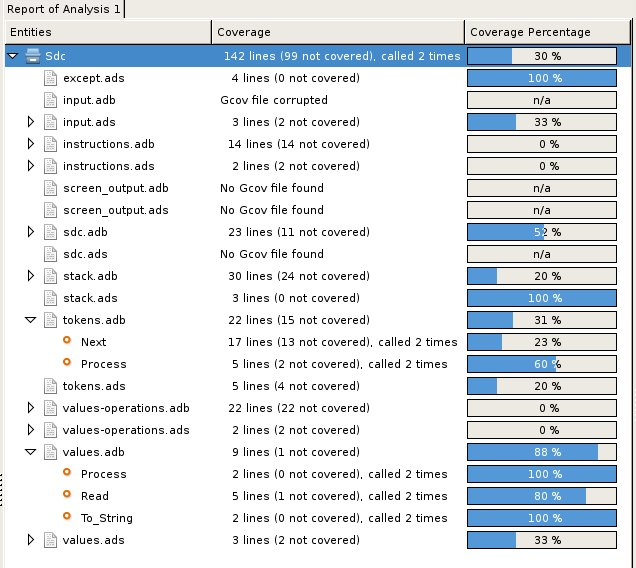
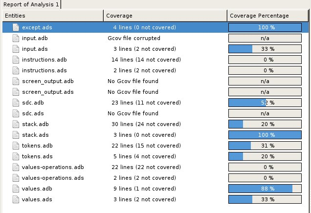
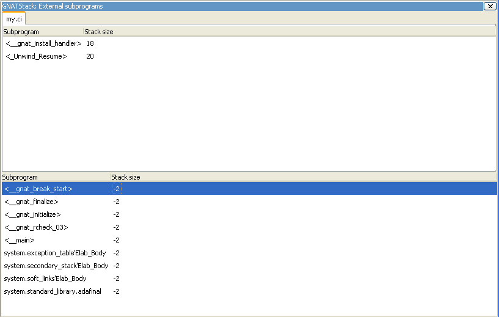

12. Tools¶
12.1. Coding Standard¶
Use the Coding Standard menu to edit your coding standard file and run it against your code to verify its compliance with the coding standard. This file is the input to the gnatcheck tool. You can also use the contextual menu to check the conformance of a particular project or source file against a coding standard.
Access the Coding standard editor using the menu. Select either an existing coding standard file or create a new one. The editor adapts itself to the version of gnatcheck on your local machine.
GPS summarizes the rules currently in use at the bottom of the editor. Once all rules are defined, check the box Open rules file after exit to manually verify the created file. Once you have created the coding standard file, set it as the default coding standard file for a project by going to the project editor, selecting the Switches tab, and specifying this file in the Gnatcheck section.
12.2. Visual Comparison¶
The visual comparison, available either from the VCS menus or the Tools menu, provides a way to graphically display differences between two or three files or two different versions of the same file.
The 2-file comparison tool uses the standard tool diff,
available on all Unix systems. Under Windows, a default implementation is
provided with GPS, called gnudiff.exe, but you may want to provide
an alternate implementation, for example by installing a set of Unix tools
such as Cygwin (http://www.cygwin.com). The
3-file comparison tool is based on the text tool diff3,
available on all Unix systems. Under Windows, this tool is not provided
with GPS, but is available as part of Cygwin.
GPS displays visual comparisons in either Side-by-Side or Unified mode. In Side-by-Side mode, GPS displays editors for the files involved in the comparison side by side. By default, GPS places the reference file on the left. In Unified mode, GPS does not open a new editor, but shows all the changes in the original editor. Unified mode is used only when comparing two files; when comparing three files, only Side-by-Side mode is available.
Lines in the file editors are highlighted with various colors. In side-by-side mode, only the right editor (for the modified file) has different colors. Each highlight color indicates a different type of line:
gray
All the lines in the reference (left) file.
yellow
Lines modified from the reference file. Small differences within one line are shown in a brighter yellow.
green
Lines not originally in the reference file but added to the modified file.
red
Lines present in the reference file but deleted from the modified file.
You can configure these colors in the preferences dialog.
Like all highlighted lines in GPS, the visual differences highlights are visible in the Speed Column at the left of the editors.
GPS adds blank lines in one editor in places corresponding to existing lines in the other editors and synchronizes vertical and horizontal scrolling between the editors involved in a visual comparison. If you close one of those editors, GPS removes the highlighting, blank lines, and scrolling in the other editors.
When you create a visual comparison, GPS populates the Locations view with the entries for each chunk of differences; use them to navigate between differences.
Editors involved in a visual comparison have a contextual menu Visual diff containing the following entries:
Recompute
Regenerate the visual comparison. Use this when you have modified one of the files in an editor by hand while it is involved in a visual comparison.
Hide
Remove the highlighting corresponding to the visual comparison from all involved editors.
Close editors
Closes all editors involved in this visual comparison
Use this editor as reference
Make this editor the reference (this is only present when displaying a visual comparison involving 3 files).
12.3. Code Fixing¶
GPS provides an interactive mechanism to correct or improve your source code based on error and warning messages generated by the GNAT compiler. This capability is integrated with the Locations view (see The Locations View): when GPS can make use of a compiler message, it adds an icon on the left of the line.
If a wrench icon is displayed and you left-click on it, the code is fixed automatically, and you will see the change in the corresponding source editor. This occurs when a simple fix, such as the addition of a missing semicolon, is sufficient to resolve the error.
Right-click on the icon to display a contextual menu with text explaining the action that would be performed on a left-click. Displaying a contextual menu anywhere else on the message line provides an option called Auto Fix, giving you access to the same information. For the previous example of a missing semicolon, the menu contains an entry labeled Add expected string ”;”. You can choose to Apply to this occurrence or Apply to all similar errors. The latter option applies the same simple fix to all errors that are the same, based on parsing the error message. The wrench icon is removed once the code change has been made.
For more complex errors where more than one change is possible, GPS displays a wrench icon with a blue plus sign. Clicking the icon displays a contextual menu listing the possible fixes. For example, this is displayed when an ambiguity in resolving an entity is reported by the compiler.
Right-clicking on a message with a fix opens a contextual menu with an entry Auto Fix. Fixes that can be applied by clicking on the wrench are also available through that menu. In addition, if GPS considers one of the fixes to be safe, it provides additional menu entries to apply fixes at multiple locations:
Fix all simple style errors and warnings
Offered only when the selected message is a style warning or error. Fixes all other style warnings and errors for which a unique simple fix is available.
Fix all simple errors
Fixes all errors messages for which a unique simple fix is available
12.4. Documentation Generation¶
GPS uses the GNATdoc tool to generate documentation from source files. See GNATdoc User’s Guide for more information about this tool, including comment formatting and possibilities for customization.
Invoke the documentation generator from the menu:
Generate Project
Generate documentation for all files in the loaded project.
Generate Projects & Subprojects
Generate documentation for all files in the loaded project and its subprojects.
Generate current file
Generate documentation for the current file.
12.5. Working With Unit Tests¶
GPS uses gnattest, a tool that creates unit-test stubs as well as a test driver infrastructure (harness). It can generate harnesses for a project hierarchy, a single project or a package. Launch harness generation process from the menu or a contextual menu.
After a harness project has been generated, GPS switches to it, allowing you to implement tests, compile and run the harness. You can exit the harness project and return to original project at any point.
12.5.3. Project Properties¶
You configure GNATtest’s behavior through the GNATtest page in The Project Properties Editor.
12.6. Metrics¶
GPS provides an interface to the GNAT software metrics generation tool gnatmetric. Metrics can be computed for one source file, the current project, or the current project and all its imported subprojects
Invoke the metrics generator from the menu or the contextual menu.
12.6.2. The Contextual Menu¶
When relevant to the context, right-clicking displays metrics-related contextual menu entries. The contextual menu for a source file has an entry Metrics for file that generates the metrics for the current file. The contextual menu for a project (see The Project view) has an entry Metrics for project that generates the metrics for all files in the project.
After computing the requested metrics, GPS displays a new window in the left area showing the computed metrics in a hierarchical tree form, arranged first by files and then by scopes inside the files. Double-clicking any of the files or scopes opens the corresponding source location in the editor. GPS displays any errors encountered during metrics computation in the Locations view.
12.7. Code Coverage¶
GPS is integrated with gcov, the GNU code coverage utility. Within GPS, you can compute, load, and visualize code coverage information. You can do this for individual files, for each file of the current project, for individual projects in a hierarchy, or for the entire project hierarchy currently loaded by GPS.
Once computed and loaded, GPS summarizes the coverage information in a graphical report, formatted as a tree-view with percentage bars for each item, and uses it to decorate source code through line highlighting and coverage annotations.
You will find all coverage related operations in the menu. Before GPS can load coverage information, it must be
computed, for example by using the menu. After each coverage computation,
GPS tries to load the needed information and reports errors for missing or
corrupted .gcov files.
To produce coverage information from gcov, your project must be compiled in gcov build mode.
12.7.2. The Contextual Menu¶
When clicking on a project, file or subprogram entity (including the entities listed in the coverage report), you will see a Coverage submenu containing the following options, depending on the type of entity selected. For example, if you click on a file, the options are:
Show coverage information
Display an annotation column on the left side of the current source editor to indicate which lines are covered and which are not. Lines that are not covered are also listed in the Locations view. See The Locations View.
Hide coverage information
Remove the annotation column from the current source editor and clear coverage information from the Locations view.
Load data for xxxxxxxx.xxx
Load (or reload) coverage information for the specified source file.
Remove data of `xxxxxxxx.xxx
Delete coverage information from the specified source file.
Show Coverage report
Open a new window summarizing the coverage information. (This entry appears only if the contextual menu has been created from outside the Coverage Report.)
12.7.3. The Coverage Report¶
Once GPS loads coverage information, it displays a graphical coverage report containing a tree of Projects, Files and Subprograms with corresponding coverage information for each shown in a column on the side.
The contextual menus generated for this report contain, in addition to the regular entries, some specific Coverage Report options allowing you to expand or fold the tree, or to display flat lists of files or subprograms instead of a tree. A flat list of files looks like:
GPS and gcov both support many different programming languages, so code coverage features are available in GPS for many languages. But subprogram coverage details are not available for every supported language. If you change the current main project in GPS, using the menu, for example, GPS deletes all loaded coverage information for the loaded project.
12.8. Stack Analysis¶
GPS provides an interface to GNATstack, the static stack
analysis tool. This interface is only available if you have the
gnatstack executable installed and available on your path. GPS
computes, loads, and visually displays stack usage information for the
entire project hierarchy. You can enter stack usage information for
unknown and unbounded calls within GPS.
Once computed and loaded, GPS summarizes the stack usage information in a report and uses it to annotate source code with stack usage annotations. The largest stack usage path is loaded into the Locations view. See The Locations View.
Specify stack usage information for undefined subprograms by adding one or
more .ci files to the set of GNATStack switches in the Switches
attribute of the Stack package of your root project. For example:
project P is
package Stack is
for Switches use ("my.ci");
end Stack;
end P;
You can also specify this information by using the GNATStack page of the Switches section in the The Project Properties Editor. Use The Stack Usage Editor to edit stack usage information for undefined subprograms.
12.8.2. The Contextual Menu¶
The contextual menu for a project, file, or subprogram entity (including the entities listed in the coverage report) has a Stack Analysis submenu containing the following options, depending on the type of entity selected:
Show stack usage
Show stack usage information for every subprogram in the currently selected file.
Hide stack usage
Hide stack usage information for every subprogram in the currently selected file.
Call tree for xxx
Open the Call Tree view for the currently selected subprogram.
12.8.3. The Stack Usage Report¶
Once GPS has loaded the stack usage information, it displays a report containing a summary of the stack analysis.
12.8.4. The Stack Usage Editor¶
The Stack Usage Editor allows you to specify the stack usage of undefined subprograms so these values can be used to refine results of future analysis.
The Stack Usage Editor contains two main areas. The notebook on the top allows you to select the file to edit. It displays the contents of the file and allows you to enter or change the stack usage of subprograms in it. The table in the bottom area displays all subprograms whose stack usage information is not specified and allows you to set them.
Specify the stack usage information for subprograms by clicking in the stack usage column to the right of the subprogram’s name. When you specify a value in the bottom table, the subprogram is moved to the top table of the currently selected file. When a negative value is specified, the subprogram is moved to the bottom table.
GPS saves all changes when the stack usage editor window is closed.